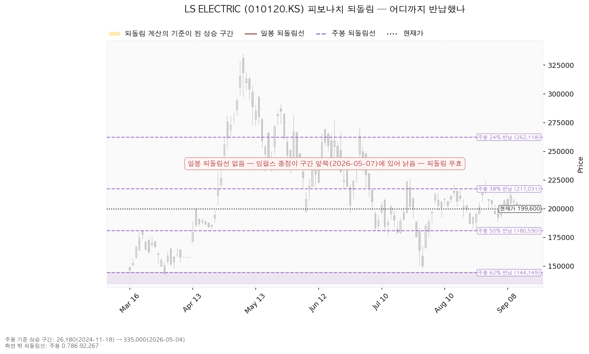
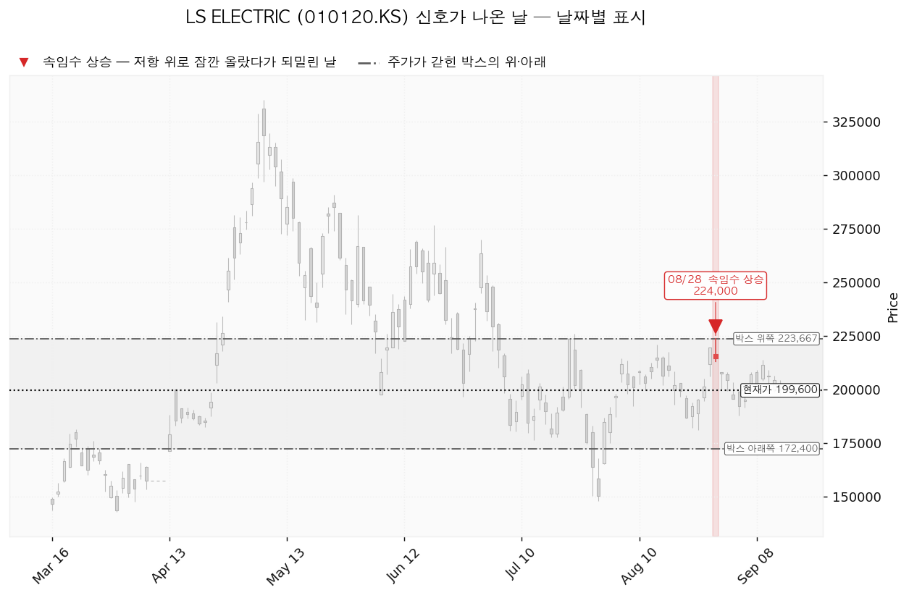
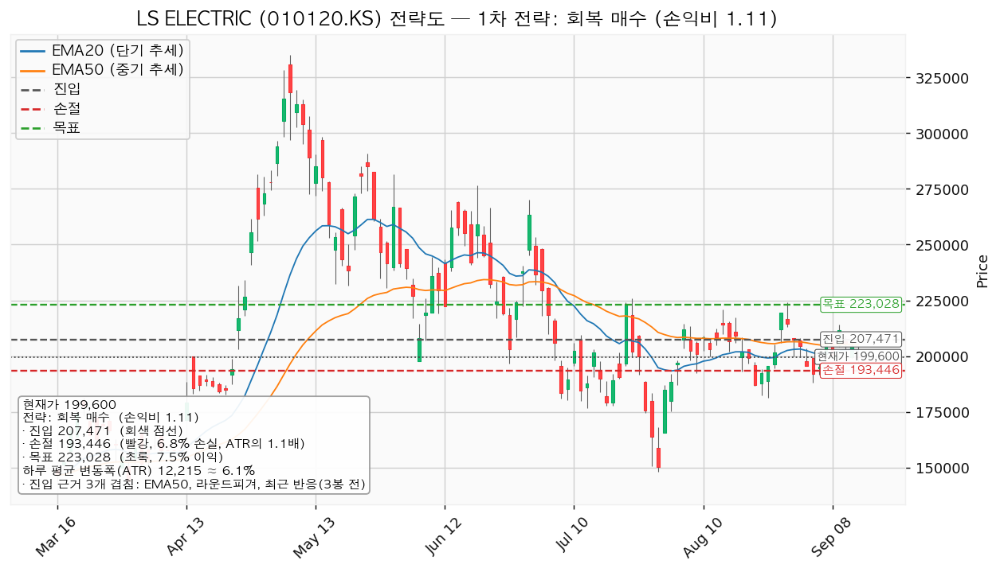
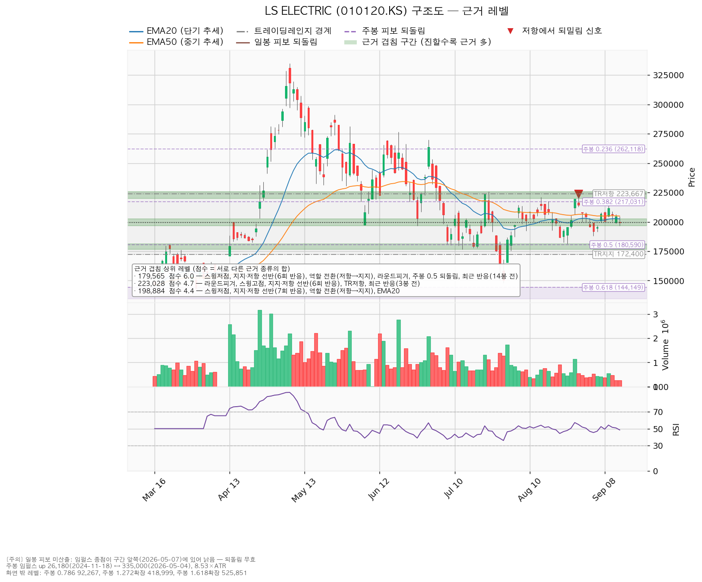

LS ELECTRIC(010120.KS)은 배전반·차단기·변압기 같은 전력기기와 전력 계통 자동화 설비를 만드는 한국 기업이며, 데이터센터·산업 설비용 전력 인프라와 해외 수출 비중이 큽니다.
| 구분 | 가격 | 판정 방식 | 현재가 대비 | 상태 |
|---|---|---|---|---|
| 회복선(신규 진입 조건) | 207,471원 | 일봉 종가로 회복한 뒤 되돌림에서 지지되는지 | +3.94% (0.64 ATR) | 회복 대기 |
| 집행 손절 | 193,446원 | 진입한 경우에만 유효 — 미진입 상태에서는 의미 없음 | -3.08% (0.50 ATR) | — |
| 관망 종료 / 보유분 절반 축소 | 179,565원 | 일봉 종가 이탈 | -10.04% (1.64 ATR) | 유지 중 |
| 확인선 | 223,028원 | 일봉 종가 돌파 후 되돌림 지지 확인 | +11.74% (1.92 ATR) | 미돌파 |
| 폐기선(구조) | 172,400원 | 이탈 후 3거래일 내 회복 실패 + 반등에서 저항으로 확인 | -13.63% (2.23 ATR) | 유지 중 |
표의 'ATR'은 하루 평균 변동폭(12,215원)을 뜻하며, 레벨까지의 거리를 "평범한 하루 등락의 몇 배인지"로 환산한 값입니다.
박스 상단 223,667원은 확인선 223,028원 바로 위의 맥락이며 기준선으로 쓰지 않습니다. 폐기선은 현재가에서 하루 변동폭의 2.23배 아래라 이번에도 실제로 볼 수 있는 거리에 있습니다.
직전 리포트 이후 마감한 거래일은 9월 14일 하루입니다.
| 직전 리포트가 건 조건 | 결과 |
|---|---|
| 회복선 — 종가 212,167원 회복 | 미충족. 9/14 종가 199,600원으로, 회복선까지 12,567원(하루 변동폭의 1.03배)을 남겼습니다. 신규 진입은 성립하지 않았습니다 |
| 경고 단계 이탈선 — 종가 199,604원 아래 마감 | 충족. 9/14 종가 199,600원으로 4원 아래 마감했습니다 |
| 집행 손절 193,359원 | 미충족. 진입 자체가 없었으므로 판정 대상도 아니었습니다 |
| 관망 종료 180,178원 | 미충족 |
| 확인선 219,344원 / 목표 224,292원 | 둘 다 미충족. 9/11 이후 고가가 이 가격대에 닿은 날이 없습니다 |
| 폐기선 172,400원 | 미충족. 유지 중입니다 |
직전 결론은 "손익비 1:0.64라 신규 진입 패스"였고, 그 뒤 가격은 204,500원에서 199,600원으로 -2.40% 내려왔습니다. 진입을 넘긴 판단은 가격으로도 맞았습니다. 경고 단계 이탈선을 4원 차이로 내려선 것은 형식상 충족이지만, 그 선이 뜻하던 "하루 변동폭 1배만큼 더 밀림"에는 해당하지 않습니다 — 지금 가격은 직전 회복선 아래에 그대로 머물러 있는 상태입니다.
| 항목 | 2026-09-11 | 2026-09-14 | 왜 |
|---|---|---|---|
| 현재가 | 204,500원 | 199,600원 | -2.40% |
| 하루 평균 변동폭 | 12,562원 (6.14%) | 12,215원 (6.12%) | 변동이 계속 줄어드는 중 |
| 과열·침체 온도계 | 50.84 | 48.42 | 중립 |
| 박스 | 172,400 ~ 223,667원 (40거래일 창) | 같습니다 | 창도 40거래일 그대로이고, 가격을 담은 비율 95.0%도 같습니다. 폭만 하루 변동폭의 4.08배에서 4.20배로 넓어졌는데 이는 박스가 커진 것이 아니라 변동폭이 줄어서입니다 |
| 폐기선 | 172,400원 (-15.70%) | 172,400원 (-13.63%) | 같은 가격입니다. 가격이 내려와 거리만 좁혀졌습니다 |
| 회복선 | 212,167원 (겹침 3.5) | 207,471원 (겹침 2.1) | 가격이 내려오면서 현재가 바로 위를 막는 자리가 바뀌었습니다. 50일 평균가격선 204,941원 + 라운드피겨 210,000원 + 3거래일 전 반응이 모인 204,941~210,000원 구간입니다. 근거는 3.5점에서 2.1점으로 얇아졌습니다 |
| 확인선 | 219,344원 (겹침 3.8) | 223,028원 (겹침 4.7) | 주봉 38% 반납선 217,031원이 이번에는 214,510원 구간(4.4점)으로 따로 묶이면서, 확인선은 라운드피겨 220,000원 + 선반(6회 반응) + 박스 상단 + 8/28 고점이 모인 220,000~226,000원으로 올라갔습니다. 근거는 더 두꺼워졌습니다 |
| 관망 종료 기준 | 180,178원 (겹침 6.0) | 179,565원 (겹침 6.0) | 같은 구간(176,500~181,200원)이며 중심값만 613원 내려왔습니다 |
| 대표 셋업 | 진입 212,167 / 손절 193,359 / 목표 224,292, 손익비 1:0.64 | 진입 207,471 / 손절 193,446 / 목표 223,028, 손익비 1:1.11 | 아래 설명 |
| 박스 안쪽 판정 | 중립 | 중립 | 저점은 여전히 절하이고, 상승봉 대 하락봉 거래량비는 1.05에서 1.08로 거의 그대로입니다 |
| 체결 장부 | 기록 없음 | 39주 · 평단 233,648원 (2026-08-03 매수) | 직전 리포트 시점에는 이 종목의 체결 기록이 장부에 없었습니다. 지금은 기록이 있으므로 이번 리포트부터 평단 대비 손익을 계산합니다 |
손익비가 0.64에서 1.11로 올라간 이유: 손절은 193,359원에서 193,446원으로 87원 올라갔을 뿐입니다 — 같은 지지 구간 아래에 붙어 있어 제자리입니다. 반면 진입이 4,696원 내려왔고 목표는 1,264원만 내려와, 진입에서 목표까지의 폭이 0.97 ATR에서 1.27 ATR로 넓어졌고 손절 폭은 1.50 ATR에서 1.15 ATR로 좁아졌습니다. 구조가 좋아져서가 아니라 가격이 내려와 진입 후보가 손절 쪽으로 다가선 결과입니다. 그 대가로 진입 근거의 겹침이 3.5점에서 2.1점으로 얇아졌습니다.
바뀌었습니다. 직전 두 번(9/7 손익비 0.60, 9/11 손익비 0.64)은 신규 진입을 패스로 적었으나, 이번에는 손익비가 1.11로 1을 넘어 조건부 진입으로 바꿉니다. 바뀐 원인은 위에 적은 대로 가격 하락으로 진입 후보가 내려온 것이며, 진입 근거의 두께는 오히려 얇아졌습니다.
직전 리포트에 정정할 오류는 없습니다. 다만 직전 리포트가 "체결 장부에 기록이 하나도 없다"고 적은 부분은 지금 유효하지 않습니다 — 8월 3일자 매수 39주가 장부에 있으며, 아래 6절에서 이 보유분을 기준으로 계획을 냅니다.
| 지표 | 값 | 읽는 법 |
|---|---|---|
| 현재가 (2026-09-14 종가) | 199,600원 | — |
| 20일 평균가격선 | 202,536원 | 현재가가 아래 (-1.45%, 0.24 ATR) |
| 50일 평균가격선 | 204,941원 | 현재가가 아래 (-2.61%, 0.44 ATR) — 두 선 간격이 2,405원(0.20 ATR)으로 붙어 있어 방향이 없는 상태 |
| 과열·침체 온도계 (RSI 14) | 48.42 | 중립 |
| 하루 평균 변동폭 (ATR) | 12,215원 | 주가의 6.12% |
| 직전 고점 / 직전 저점 | 224,000원 (8/28) / 188,000원 (9/3) | — |
| 추세 판정 / 국면 | 하락 / 횡보 레인지(구조 유지 — 하단 사수 조건부) | — |
| 주가가 갇힌 박스 | 아래쪽 172,400원 / 위쪽 223,667원 | 유효한 박스입니다(40거래일 창, 가격의 95.0%를 이 안에서 보냄, 폭은 하루 변동폭의 4.20배) |
박스 판정에 쓴 창은 40거래일이고 조회된 전체 일봉은 727개입니다. 40거래일(가격 담은 비율 95.0%, 폭 4.20배)·90거래일(87.8%, 9.15배)·180거래일(91.7%, 16.68배) 세 창을 모두 시험해 40거래일 창이 선택됐습니다.
박스 안쪽 관측: 박스 안 저점은 절상이 아니라 절하이고, 상승한 날의 거래량은 하락한 날의 1.08배로 거의 같습니다. 이 두 가지 때문에 박스 안쪽은 매집도 분산도 아닌 중립으로 판정됐습니다. 가격이 이 박스로 들어온 방향은 위에서 아래입니다 — 직전 구간(208,200~279,167원)에서 아래로 내려와 이 박스에 들어왔으므로, 다시 모으는 구간인지 나눠 파는 구간인지는 아직 갈리지 않았습니다. 지지 테스트로 기록된 날은 7/21(저가 177,600원, 거래량 평소의 1.0배)과 7/30(저가 148,000원, 1.33배) 두 번뿐이라 지지 테스트 거래량의 추세는 표본 부족으로 계산되지 않았습니다.
크게 오른 구간의 상승분을 몇 % 토해냈는지로 지지·저항을 잡는 방식입니다.
주봉 기준 상승 구간: 26,180원(2024-11-18) → 335,000원(2026-05-04) (구간 높이는 하루 변동폭의 8.53배)
| 반납 비율 | 가격 | 현재가 대비 | 의미 |
|---|---|---|---|
| 24% 반납 | 262,118원 | +31.32% | 멀리 있는 저항 |
| 38% 반납 | 217,031원 | +8.73% | 214,510원 구간(겹침 4.4점)을 구성하는 근거 중 하나 |
| 50% 반납 | 180,590원 | -9.52% | 보유분 절반 축소선 179,565원을 구성하는 근거 중 하나 |
| 62% 반납 | 144,149원 | -27.78% | 여기까지 밀리면 대세 상승분의 대부분 반납 |
현재가 199,600원은 50% 반납선과 38% 반납선 사이에 있고, 38% 반납선까지는 하루 변동폭의 1.43배입니다. 아래 차트에서 색이 살아 있는 부분이 되돌림 계산의 기준 구간이고 회색은 계산과 무관한 구간입니다.

| 날짜 | 신호 | 가격 | 뜻 |
|---|---|---|---|
| 2026-08-28 | 속임수 상승 | 224,000원 | 박스 위쪽 223,667원 위로 잠깐 올라섰다가 그날 종가 214,500원으로 되밀린 날입니다 |
직전 리포트와 같은 신호 하나이며 새로 추가된 신호는 없습니다. 이 신호는 그 이후 가격이 박스 위쪽을 다시 시험하지 못한 이유를 설명합니다 — 9/9 고가 214,000원도 그 아래에서 멈췄고, 그 뒤로는 200,000원 부근까지 밀렸습니다.

| 시나리오 | 조건 | 구조 해석 | 행동 |
|---|---|---|---|
| 상승 전환 | 207,471원 종가 회복 후 지지 → 223,028원 종가 돌파 | 속임수 하락 확인 → 강세 신호 → 되돌림 지지 → 상승 추세 진입 | 207,471원 회복·지지 확인 시 아래 5절 셋업으로 신규 매수. 223,028원을 종가로 넘으면 그 위 구간은 이 포지션의 연장이 아니라 새 셋업으로 다시 잡습니다 |
| 횡보 지속 | 172,400원을 지키며 223,028원 아래에서 박스 유지 | 구조는 유지 — 매물을 소화하는 데 시간이 필요한 국면이며 부정 신호가 아닙니다 | 신규 진입 보류, 보유 39주 유지. 추적 항목: ① 지지를 시험할 때마다 매도 거래량이 줄어드는지 ② 저점이 절상으로 돌아서는지 ③ 오를 때 거래량과 캔들 폭이 확대되는지. 현재 관측: 박스 안 저점 절하, 상승봉 대 하락봉 거래량비 1.08, 지지 테스트 거래량 추세는 표본 2회로 계산 불가 |
| 시나리오 폐기 | 172,400원 이탈 후 3거래일 내 종가 회복 실패(또는 그 전에 종가가 160,185원 아래로 마감) + 반등에서 저항으로 확인 | 매집이 아니라 재분산 — 추가 저점 갱신 가능성을 엽니다 | 보유분 전량 정리 후 새 구조가 만들어질 때까지 관망 |
이 시스템은 매수 방향만 산출합니다(개별 종목에 매도 셋업은 내지 않습니다). 지금은 하락·중립 국면이라 "저항선을 종가로 되찾은 뒤에만 매수로 돌아선다"는 회복 매수 하나만 나왔습니다. 박스 안쪽 판정이 중립이라 지지 확인 매수는 산출되지 않았습니다 — 저점이 절하되고 거래량비가 1.08이라 매집 우위 조건을 채우지 못했기 때문입니다.
이 셋업이 대표로 뽑힌 이유: 손익비 1.11 × 구조 증명도(회복 확인형) × 진입 근거 겹침 2.1점입니다. 산출된 셋업이 하나뿐이라 손익비와 구조 증명도 사이의 선택 문제는 없었습니다.
| 항목 | 회복 매수 (유일한 셋업) |
|---|---|
| 방향 | 매수 |
| 엣지의 종류 | 모멘텀 — "저항을 종가로 되찾으면 그 방향이 이어진다"는 전제 |
| 성격 | 자주 틀리고 소수가 크게 맞는 유형. 승률을 기대하는 셋업이 아닙니다(이 유형의 일반적 성격이며, 이 분석에서 측정한 수치가 아닙니다) |
| 구조 증명도 | 회복 확인형 — 저항을 종가로 되찾은 뒤에만 들어가므로 진입가는 불리하지만 구조가 먼저 증명됩니다 |
| 진입 | 207,471원 (현재가 대비 +3.94%, 0.64 ATR 위) |
| 집행 손절 | 193,446원 — 손절 폭 14,024원 = -6.76% = 1.15 ATR |
| 손절을 그 자리에 둔 이유 | 근거 겹침 구간(196,500~202,536원, 4.4점) 바로 아래입니다. 지지 구간 안쪽이 아니라 그 아래에 두었기 때문에 손절 폭이 넓어졌고, 그만큼 손익비가 낮아졌습니다 |
| 목표 | 223,028원 (진입 대비 +7.50%, 1.27 ATR) |
| 손익비 | 1:1.11 (손절 폭 1.15 ATR) — 이 손절이 이미 구조적 손절이므로 구조적 손절 기준 손익비도 같은 1:1.11입니다. 손절을 조여서 만든 숫자가 아닙니다 |
| 산출된 분할 청산 계획 | T1 214,510원 50% 익절(손익비 1:0.50) → 잔여분 손절을 진입가 207,471원으로 이동 → T2 223,028원 나머지 50%(1:1.11). 전 구간 손익비 1:0.81, T1 후 본전 스탑 기준 하한 1:0.25 |
| 집행 방식 | 진입에서 목표까지가 1.27 ATR로 2배에 못 미쳐 다단 청산·트레일링은 권하지 않습니다(이 2배 기준은 관행이지 정설은 아닙니다). 계획은 하나 — 목표 223,028원에서 전량 청산입니다 |
| 비중 | 1회 매매 손실 한도를 계좌의 1%로 잡으면 포지션은 계좌의 14.8%가 나옵니다. 한 종목 상한 13%를 적용해 13%로 제한합니다. 이미 보유한 39주(평가액 7,784,400원)가 이 한도 안에 포함되므로, 추가 매수 가능분은 계좌의 13%에서 현재 평가액을 뺀 나머지입니다 |
진입 근거 3개 겹침 (점수 2.1, 구간 204,941~210,000원): 50일 평균가격선 + 라운드피겨 210,000원 + 최근 반응(3봉 전) 목표 근거 5개 겹침 (점수 4.7, 구간 220,000~226,000원): 라운드피겨 + 스윙고점 + 지지·저항 선반(6회 반응) + 박스 위쪽 + 최근 반응(3봉 전)

이 셋업은 현재가보다 위인 207,471원에서 종가 회복을 확인한 뒤 들어가는 것이므로, 지금 가격에 따라붙어 사는 매수는 이 셋업에 해당하지 않습니다.
확인선과 목표가 같은 가격입니다(223,028원). 이는 모순이 아니라 분기입니다 — 이 가격에서 막히고 되밀리면 목표 달성이므로 전량 청산하고, 일봉 종가로 넘어서면 상승 확정이므로 그때는 새 셋업으로 다시 잡습니다.
| 단계 | 조건 | 의미 | 행동 |
|---|---|---|---|
| ① 관찰 | 일봉 종가가 207,471원 아래로 마감 | 구조 이탈 시작 — 되돌아 올라오면 속임수 하락일 수 있어 아직 무효가 아닙니다 | 신규 진입만 중단. 집행 손절은 그대로 |
| ② 경고 | 이탈 후 3거래일 안에 207,471원을 종가로 회복하지 못함, 또는 그 전에 일봉 종가가 195,256원 아래로 마감(하루 변동폭의 1배만큼 더 밀림) — 둘 중 먼저 오는 쪽 | 저항 회복 실패 가능성이 우세해짐 | 잔여 비중 축소. 반등이 나오면 이 가격에서의 반응 확인 |
| ③ 무효 | 반등이 207,471원에서 막히고 그 아래로 되밀림 (지지가 저항으로 전환) | 구조 해석이 틀린 것으로 확정 | 포지션 정리 후 관망 |
집행 손절 193,446원은 이 판정과 무관하게 별도로 작동하며, 장중 일시 이탈은 어느 단계에도 해당하지 않습니다.
하루 평균 변동폭이 주가의 6.12%로 8% 기준 아래에 있고 손절 폭은 6.76%(1.15 ATR)이라, 하루치 등락만으로 손절이 체결되는 구조는 아닙니다. 시계는 수 주이며 손절 폭과 시계가 서로 맞습니다.
| 항목 | 값 |
|---|---|
| 보유 수량 | 39주 (2026-08-03 매수, 체결 1건) |
| 평단 | 233,648원 |
| 평가 손익 | -14.57% (-1,327,872원) |
| 평가액 | 7,784,400원 |
| 실현 손익 | 0원 |
평단 233,648원은 확인선 223,028원과 박스 위쪽 223,667원보다 위에 있습니다. 이 박스 안에서는 평단 회복이 성립하지 않으며, 본전을 보려면 가격이 박스 위쪽을 종가로 넘어선 뒤 그보다 더 올라가야 합니다. 그 조건은 이 리포트의 수 주 시계 밖입니다.
| 단계 | 가격 | 근거 (겹침) | 평단 대비 | 할 일 |
|---|---|---|---|---|
| 위쪽 정리 1 | 214,510원 | 선반(8회 반응), 스윙고점, 주봉 38% 반납, 최근 반응(3봉 전) — 4.4점 | -8.19% (-746,372원) | 종가로 못 넘고 막히면 분할 정리 검토 |
| 위쪽 정리 2 | 223,028원 | 라운드피겨, 스윙고점, 선반(6회 반응), 박스 위쪽, 최근 반응(3봉 전) — 4.7점 | -4.55% (-414,189원) | 8/28 속임수 상승이 나온 자리. 막히면 잔여 정리 |
| 아래쪽 1단계 | 179,565원 | 선반(6회 반응), 역할 전환(저항→지지), 라운드피겨, 주봉 50% 반납, 스윙저점, 최근 반응(14봉 전) — 6.0점, 이 문서에서 가장 두꺼움 | -23.15% (-2,109,237원) | 종가 이탈 시 보유분 절반 축소 |
| 아래쪽 2단계 | 172,400원 | 박스 아래쪽, 라운드피겨, 최근 반응(38봉 전) — 2.3점 구간(170,000~172,400원) | -26.21% (-2,388,672원) | 종가 이탈 후 3거래일 내 회복 실패 + 반등에서 막힘 → 전량 정리 |
집행 손절 193,446원은 이 39주에 걸린 선이 아닙니다. 그 선은 207,471원에서 새로 들어간 포지션에만 적용됩니다.
| 가격 | 점수 | 겹치는 근거 | 구간 | 역할 |
|---|---|---|---|---|
| 179,565원 | 6.0 | 스윙저점, 선반(6회 반응), 역할 전환(저항→지지), 라운드피겨, 주봉 50% 반납, 최근 반응(14봉 전) | 176,500~181,200 | 지지 (보유분 절반 축소선) |
| 223,028원 | 4.7 | 라운드피겨, 스윙고점, 선반(6회 반응), 박스 위쪽, 최근 반응(3봉 전) | 220,000~226,000 | 저항 (확인선 = 셋업 목표) |
| 198,884원 | 4.4 | 스윙저점, 선반(7회 반응), 역할 전환(저항→지지), 20일 평균가격선 | 196,500~202,536 | 지지 (집행 손절의 근거) — 현재가가 이 구간 안 |
| 214,510원 | 4.4 | 선반(8회 반응), 스윙고점, 주봉 38% 반납, 최근 반응(3봉 전) | 212,000~217,031 | 저항 (셋업 T1) |
| 207,471원 | 2.1 | 50일 평균가격선, 라운드피겨, 최근 반응(3봉 전) | 204,941~210,000 | 저항 (회복선 = 셋업 진입) |
| 189,000원 | 2.3 | 스윙저점, 라운드피겨 190,000원, 최근 반응(7봉 전) | 188,000~190,000 | 현재가 아래 첫 받침 |
| 171,200원 | 2.3 | 라운드피겨, 박스 아래쪽, 최근 반응(38봉 전) | 170,000~172,400 | 지지 (폐기선 구간) |
| 146,075원 | 3.2 | 주봉 62% 반납, 스윙저점, 최근 반응(31봉 전) | 144,149~148,000 | 지지 (폐기선 이탈 시 다음 받침) |
현재가 199,600원은 겹침 4.4점 지지 구간(196,500~202,536원) 안에 들어와 있습니다. 이 구간을 종가로 지키는지가 다음 며칠의 관찰 지점이며, 잃으면 다음 받침은 189,000원(2.3점)입니다.

| 항목 | 값 |
|---|---|
| 목표주가 (23명) | 평균 275,813원 / 최저 180,000원 / 최고 350,000원 |
| 현재가의 위치 | 199,600원 — 최저 목표 180,000원보다 위(+10.89%), 평균까지는 +38.18% |
| 투자의견 | 매수 |
| 후행 PER | 데이터가 제공되지 않았습니다 |
| 선행 PER | 39.32배 (내년 예상 주당순이익 5,077원 기준). 올해 예상 이익 기준으로는 55.92배 |
| 올해 예상 주당순이익 | 3,570원 (범위 3,070~3,978원), 성장률 +85.0% |
| 내년 예상 주당순이익 | 5,077원 (범위 3,521~6,222원), 성장률 +42.2% |
| 90일간 추정치 변화 | 올해 +7.3%, 내년 +16.7% — 상향 |
배수는 후행이 제공되지 않아 선행만 볼 수 있습니다. 올해 이익 기준 55.92배와 내년 이익 기준 39.32배가 벌어져 있는 것은 이익이 올해 +85.0%, 내년 +42.2% 늘어난다는 추정 때문입니다. 후행 배수가 없으므로 싸다·비싸다를 배수 하나로 단정하지 않습니다.
5월 고점 대비 하락의 성격은 배수 수축입니다. 최근 90일간 애널리스트의 이익 추정치는 올해 +7.3%, 내년 +16.7%로 올라갔는데 주가는 5월 고점 335,000원 대비 -40.42% 내려와 있습니다. 추정치가 함께 내려갔다면 사업 악화로 읽어야 하지만 방향이 반대입니다. 배수 수축은 시작도 끝도 미리 알 수 없으므로 이것이 곧 매수 근거는 아닙니다.
현금흐름은 설비투자를 늘리고도 잉여가 남는 상태입니다. 2025-12-31 결산 기준으로 영업활동 현금흐름 +2,999억원, 설비투자 2,096억원(직전 1,516억원, +38.2%), 잉여현금흐름 +904억원입니다. 영업 단계에서 현금이 나가는 유형이 아니라 투자를 앞세우고도 남는 유형이며, 확인할 것은 그 투자가 매출·수주로 회수되는 속도입니다.
상승 여력의 분해: 평균 목표주가 275,813원을 내년 예상 주당순이익 5,077원으로 나누면 54.33배입니다. 현재가는 같은 이익 기준 39.32배이므로, 목표까지의 +38.18%는 전부 배수가 39.32배에서 54.33배로 확장되는 부분에서 나옵니다. 이익 증가는 이미 내년 이익 기준 배수 안에 들어가 있고, 그 위의 상승분은 시장이 매기는 배수가 더 올라가야 성립합니다. 배수가 확장될지는 이 리포트가 쓰는 가격 기준으로는 판정할 수 없습니다.
주도주 판정: 아닙니다. 5월 고점 대비 -40.42%이고 추세 판정은 하락이며, 20일·50일 평균가격선이 202,536원과 204,941원으로 0.20 ATR 간격까지 붙어 방향이 없습니다. 전력기기 섹터 자체의 강도는 이 분석 범위 밖이므로, 섹터 판단이 필요하시면 시황 분석을 따로 요청해 주십시오.
시계가 다릅니다. 컨센서스 목표주가는 12개월 시계이고 이 리포트의 셋업은 수 주 시계입니다. 결론이 갈려도 모순이 아니며, 이 리포트의 답은 진입·손절·목표로 냅니다.
| 날짜 | 이벤트 | 볼 것 |
|---|---|---|
| 2026-10-22 | 3분기 실적 발표 | ① 올해 주당순이익이 컨센서스 3,570원(범위 하단 3,070원) 근처를 지키는지 ② 설비투자 증가(+38.2%)가 매출·수주 증가로 회수되고 있는지 ③ 잉여현금흐름이 플러스를 유지하는지 |
논지 무효화 (가격과 별개): 폐기선 172,400원은 현재가에서 하루 변동폭의 2.23배 아래라 가격 기준만으로도 작동합니다. 여기에 더해 10월 22일 실적에서 ⓐ 올해 주당순이익이 컨센서스 범위 하단 3,070원 아래로 나오거나 ⓑ 90일간 이어진 추정치 상향(올해 +7.3% / 내년 +16.7%)이 하향으로 돌아서면, 가격이 어디에 있든 "하락은 배수 수축이고 사업은 훼손되지 않았다"는 이 리포트의 논지를 접습니다. 잉여현금흐름이 마이너스로 돌아서면 같은 판단을 내립니다.
*본 자료는 정보 제공 목적이며 투자 자문이 아닙니다. 최종 투자 판단과 그 결과에 대한 책임은 투자자 본인에게 있습니다.*